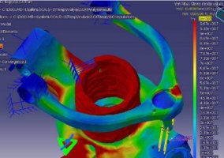

Þimdi
adýmlarýyla birlikte bu süreç nasýl ve ne þekilde geliþti
ve "Megastar" ortaya çýktý diye baktýðýmýz zaman,
yöntemlerimiz uyarýnca proje önerileri esastýr. Bu proje
önerileri, planlama komitesi tarafýndan onaylanarak hayata
geçirilir. Proje önerileri kendi içimizde uzun tartýþmalara
sahne olur. Neyi yapacaðýmýz konusunda ciddi þekilde kendi
kendimize çalýþýrýz.
Mamul
planlama komitesi onaylarsa, ürünün bir profili hazýrlanýr,
burada ürüne iliþkin tüm temel kararlar alýnýr. Bu temel
kararlar tabii ki müþteri eðilimleri üzerine kurulur. Bunlar
için, "benchmarking", "quality function deployment",
"reverse engineering" gibi her türlü konuyla ilgili
teknolojiler ve teknikler kullanýlmaktadýr. Tabii ürün profiliyle
birlikte bu ürünün de ne zaman gerçekleþtirileceði ve ayrýca
fizibilite etüdü hazýrlanýr.
Ortaya
çýkacak ürün;
1- Üretilebilir olmalýdýr;
2- Dünyanýn her yerinde satýlabilir olmalýdýr. Satýlabilir
olmasý þartý bünyesinde gereken kalite nitelikleri, zamanýnda
ve istenilen miktarda piyasada bulunabilirliði ve uygun
fiyatý olmalýdýr.
Zaman
planý ve fizibilite etüdü, ürün profiliyle birlikte deðerlendirilip
onaylanýrsa -ki burada yine icra komitesi önemlidir- bu
projeye onay verildiði takdirde, ön tasarým çalýþmalarý
baþlar. Bu adým içerisinde, ürün tasarýma yön verecek esaslar
belirlenir, ayrýntýlý tasarým faaliyetleri için baþlangýç
noktalarý oluþturulur.
|
|
|
|
Stil
tasarýmýna esas oluþturan eskizler hazýrlanýr |
Ana
ünite ve sistemlere iliþkin temel kriterler oluþturulur.
Ortak geliþtirme çalýþmasý yapýlacak olan komponent
üreticileri belirlenir |
Ýþte
bu noktada ortak geliþtirme çalýþmasý yürütecek olan komponent
üreticileri ile iþbirliði baþlamýþtýr. Bu vesileyle, bir
örnek teþkil etmek üzere, Farplas ile yaptýðýmýz bir çalýþma,
sizlere burada Ömer Bey tarafýndan sunulacaktýr. Ana komponent
üreticileri ile ön tasarým, stil-taslak modelleri, ürün
tasarýmý, prototipler ve doðrulama testleri paralel olarak
yürütülür. BMC faaliyetleri yan sanayi içerisinde de eþzamanlý
bir þekilde yapýlýr. Burada gördüðünüz ön tasarýmla ilgili
olarak, önce kafada baþlayan, kaðýt üzerinde devam eden
düþünceler, malzemeye, malzemeden prototipe, prototipten
gerçek ürüne dönüþerek bir süreç içerisinde yoluna devam
eder.
Birçok
ülkenin otomotiv sanayiinde olduðu gibi, biz de stil tasarým
konusunda Ýtalya'nýn meþhur endüstriyel tasarým firmasý
Pininfarina (www.pininfarina.it
Bakýnýz: Not) ile iþbirliði yaparak,
stili birlikte geliþtirdi. Bu þekilde baþlayan stil, sonunda
bu þekilde gördüðünüz hale döndü. Ana parçalar ve ana üniteler,
ön tasarým içerisinde deðerlendirilerek, motorundan direksiyonuna,
dingilinden koltuðuna kadar bütün kararlar verilmeye devam
eder ve kaðýt üzerindeki þeylerin artýk malzemeyle taslak
modellere ve ön prototipIere dönüþtürülmesi fazý baþlar.
|
|
|
|
Megastar
1/5 Stil Taslak Modeli |
Megastar
1/1 Stil Taslak Modeli |
Burada
gördüðünüz gibi 1/5 modeller üzerinde deðiþik gruplarýn
çalýþmalarý ile ön prototipler ile stil taslak modelleri
mukayese edilerek olgunlaþtýrýlýr. Gerekli deðiþiklik kararlarý
verilir, ayrýca sistem modelleri, mock-up hazýrlanýr ve
üzerinde çalýþmalar devam eder. Bu yeni aracýmýza ait, tamamen
kendimiz tarafýndan geliþtirilen baðýmsýz süspansiyon mock-up'larýdýr.
Bilahare, birebir dediðimiz ürünün bütün ölçüleriyle ortaya
çýktýðý, stil taslak modeli ortaya çýkar. Bu da hala bir
modeldir, bir prototip deðildir.
|
 |
|
|
Ürün
Tasarýmý / CAD/CAM/CAE uygulamalarý |
Ön
prototipler / Sistem modelleri |
Bütün
bu hazýrlýk çalýþmalarý neticesinde, detay tasarým baþlatýlýr.
Detay tasarýmda yine ana komponent üreticileri ile birlikte,
beraberce oluþturulmuþ süreçlerin eþzamanlý ve paralel bir
þekilde devamýyla gerçekleþtirilir. Biraz önce mock-up'larýný
gördüðünüz baðýmsýz süspansiyonun artýk burada birebir kendisini
görüyorsunuz ama bu aþamalarda CAD, CAM, CAE, hýzlý prototip
yapýmý gibi otomotivde geçerli tüm teknik ve teknolojiler
ve her türlü deney tasarýmý kullanýlýr.
Þuna
deðinmek istiyorum, aslýnda burada gördüðünüz araþtýrma,
tasarým ve geliþtirme çalýþmalarý, ticari anlamda olan þeylerdir.
Aslýnda, "commercial research" dediðimiz faaliyetlerin,
"advanced research" ile daha da temelinde "basic
research" ile desteklenmediði durumlarda maalesef her
þeyi tam yapmýþ sayýlamýyoruz. "Basic- research"
ki özellikle üniversitelerden bekliyoruz, bu "advanced
research"e girdi teþkil edecek, "advanced research"
de "commercial research"e girdi teþkil edecektir.
Bütün bu unsurlar henüz otomotivde tamamlanmýþ deðil. Arzumuz
zaman içerisinde bunlarýn tamamlanmasýdýr.
Tabii
tasarýmý yapmak tek baþýna bir marifet deðil, tasarýmýn
teorik olarak doðrulanmasý, ayný zamanda pratik olarak doðrulanmasý
þarttýr. Bu süreçlerin pratik ve teorik doðrulanmasý Ar-Ge'nin
olmazsa olmaz en önemli faaliyetlerindendir. Bu yüzden finite
element analizleri gibi gereken teorik doðrulama fazlarý
bizim bünyemizde de gerçekleþmektedir.
Bu
noktada, BMC ve Farplas
iliþkileri, imalatçýlarýmýzla müþterek geliþtirme çalýþmalarýmýzýn
sadece bir örneðidir. Bunun gibi pek çok örnek mevcuttur.
Farplas ile neyi geliþtirdik? Gördüðünüz gibi stop lamba
gruplarýný, ön panjur ve far grubunu, -birkaç parça daha
var, Ömer Bey bunlarý size daha detaylý anlatacak- Bu arada
tabii tasarým
sürecinde üniversiteler, baðýmsýz tasarým bürolarý gibi
kuruluþlarla da iþbirliði yapýlmaktadýr.